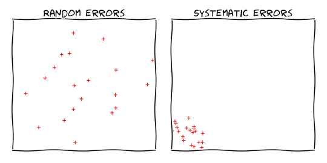
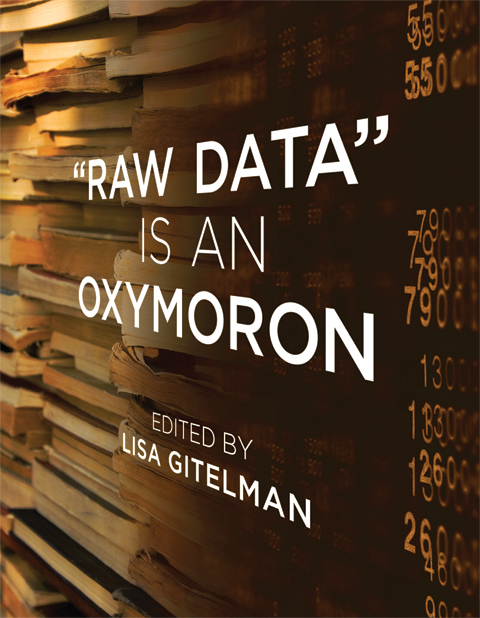
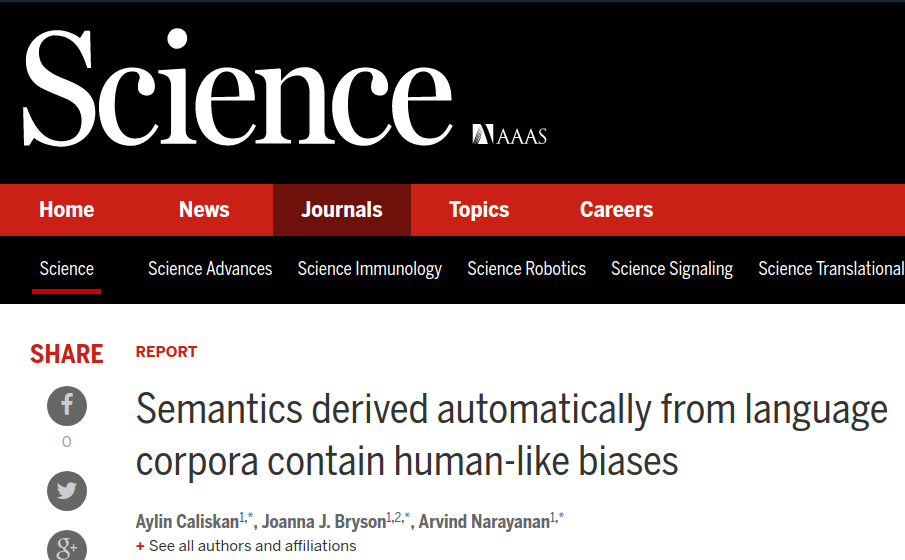
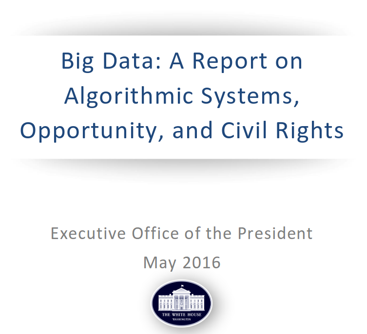
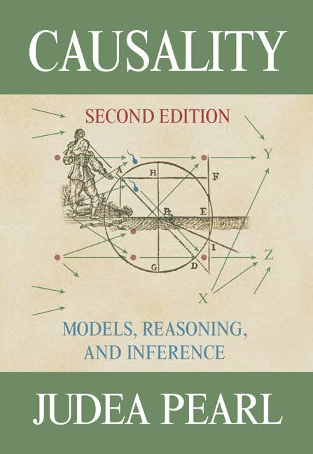

CS 294: Fairness in Machine Learning
Day 1: Overview
Moritz Hardt

August 25, 2017
Logistics
This is a CS grad seminar. Prereqs: Stats, ML, probability, linear algebra
Web site: fairmlclass.github.io
Online dicussions on Slack:
- TODO: Email me for slack access link.
- You may join anonymously (won't affect grade).
Grade: 50% in-class participation, 50% project
Not yet enrolled? Talk to me after class today.

Rough course outline
Part I: Sources of unfairness
Part II: Observational fairness criteria
Part III: Beyond observational fairness criteria
Part IV: Measurement and sampling
Part V: Legal and policy perspectives
Goal for this class
Develop a better understanding of a complex social problem that will allow us to contribute to a meaningful technical discussion.
The dangers of math snobbery
- Technical work without understanding social context.
- Thinking we're more rigorous than social scientists.
- Justifying an approach by the math it entails.
Sanity checks for taking this class
You don't mind reading social science papers
You'd still be here even if the chance of getting a paper out of it is 0.
Part I: Sources of unfairness
How can machine learning wind up
being unfair without any explicit wrongdoing?
The sample size disparity
Generally, more data means smaller error
By definition, less data on minority groups.
Can lead to higher error rates on minority.
The meaning of low error
Two classifiers with 5% average error:

Biases in data

Biases in data
Collection:
- Demographic, geographic, behavioral, temporal biases,
Measurement:
- What do we choose to measure? How do we measure (e.g., grit)?
Pre-existing biases
- gender roles in text and images, racial stereotypes in language
ML models reflect underlying data
ML models reflect underlying data

A sequence of White House reports
On Monday
We'll discuss:
Barocas, Selbst. Big Data's Disparate Impact
Before we meet:
Skim the whole thing. Choose one part to read very carefully.
Background reading
- Boyd and Crawford, “Critical Questions for Big Data”
- O'Neill, Weapons of Math Destruction
- Pasquale, The Black Box Society
- The White House Office of Science and Technology Policy, Big Data: A Report on Algorithmic Systems, Opportunity, and Civil Rights
Quick Outlook
Part II:
Observational fairness criteria
Many definitions
Algorithms for achieving them
Trade-offs
Impossibility results
Typical setup
$X$ features of an individual
$A$ sensitive attribute (race, gender, ...)
$C=C(X,A)$ classifier mapping $X$ and $A$ to some prediction
$Y$ actual outcome
Note: random variables in the same probability space
All of this is a lie
$X$ incorporates all sorts of measurement biases
$A$ often not even known, ill-defined, misreported, inferred
$C$ often not well defined, e.g., large production ML system
$Y$ often poor proxy of actual variable of interest
Demographic parity
Assume $C$ and $A$ are binary $0/1$-variables.
Definition.
Classifier $C$ satisfies demographic parity if
$\mathbb{P}\{ C = 1 \mid A = 1 \} = \mathbb{P}\{ C = 1 \mid A = 0 \}$.
Accuracy parity
Assume $A$ is binary $0/1$-variable.
Definition.
Classifier $C$ satisfies accuracy parity if
$\mathbb{P}\{ C = Y \mid A = 1 \} = \mathbb{P}\{ C = Y \mid A = 0 \}$.
Precision parity
Assume $C$, $Y$ and $A$ are binary $0/1$-variables.
Definition.
Classifier $C$ satisfies precision parity if
$\mathbb{P}\{ Y = 1 \mid C=1, A = 1 \} = \mathbb{P}\{ Y = 1\mid C=1, A = 0 \}$.
True positive parity
Assume $C$, $Y$ and $A$ are binary $0/1$-variables.
Definition.
Classifier $C$ satisfies true positive parity if
$\mathbb{P}\{ C = 1 \mid Y=1, A = 1 \} = \mathbb{P}\{ C = 1\mid Y=1, A = 0 \}$.
Observational criteria
Definition. A criterion is called observational if it is a property of the joint distribution of features $X,A$, classifier $C$, and outcome $Y$.
Examples: Everything we just saw, and many others.
Questions we'll work on
What can we learn from observational criteria?
How can we achieve them algorithmically?
How do they trade-off?
How do these criteria shape public discourses?
Key example: COMPAS debate on crime recidivism risk scores
COMPAS: An observational debate

COMPAS: An observational debate
Probublica's main charge was observational.
Black defendants experienced higher false positive rate.
Northpointe's main defense was observational.
Scores satisfy precision parity.
Trade-offs are necessary
A classifier $C$ cannot simultaneously achieve (a) precision parity, (b) true positive parity, and (c) false positive parity unless:
- $C=Y$ (the classifier is perfect), or
- $\mathbb{P}\{Y=1\mid A=0\}=\mathbb{P}\{Y=1\mid A=1\}$ (base rates are equal)
Due to Kleinberg, Mullainathan, Raghavan (2016), and Chouldechova (2016), although stated somewhat differently.
Observational criteria have inherent limitations
There are two scenarios with identical joint distributions,
but completely different interpretations for fairness.
In particular, no observational definition
can distinguish the two scenarios.
Due to H, Price, Srebro (2016)
Part III:
Beyond Observational Measures
Causality
Deep dive into causal graphs, causal inference, interventions, matching
Develop causal fairness criteria (definitions, algorithms, trade-offs, ...)
Relationship to similarity-based fairness notions ("individual fairness")
Background reading
Part IV:
Measurement and sampling
Measurement theory, sampling theory
Developing awareness of pitfalls
Understand data-generating processes better
Part V:
Legal and policy perspectives
Understand legal challenges technical work faces
Think through possibility of policy recommendations